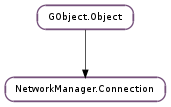

| static | create_setting(name) |
| static | lookup_setting_type(name) |
| static | lookup_setting_type_by_quark(error_quark) |
| static | new() |
| add_setting(setting) | |
| clear_secrets() | |
| clear_secrets_with_flags(func, *user_data) | |
| compare(b, flags) | |
| dump() | |
| duplicate() | |
| for_each_setting_value(func, *user_data) | |
| get_id() | |
| get_path() | |
| get_setting(setting_type) | |
| get_setting_802_1x() | |
| get_setting_adsl() | |
| get_setting_bluetooth() | |
| get_setting_bond() | |
| get_setting_bridge() | |
| get_setting_bridge_port() | |
| get_setting_by_name(name) | |
| get_setting_cdma() | |
| get_setting_connection() | |
| get_setting_gsm() | |
| get_setting_infiniband() | |
| get_setting_ip4_config() | |
| get_setting_ip6_config() | |
| get_setting_olpc_mesh() | |
| get_setting_ppp() | |
| get_setting_pppoe() | |
| get_setting_serial() | |
| get_setting_vlan() | |
| get_setting_vpn() | |
| get_setting_wimax() | |
| get_setting_wired() | |
| get_setting_wireless() | |
| get_setting_wireless_security() | |
| get_uuid() | |
| get_virtual_iface_name() | |
| is_type(type) | |
| remove_setting(setting_type) | |
| set_path(path) | |
| verify() |
| Name | Type | Flags | Description |
|---|---|---|---|
| path | str | r/w | Path |
| Name | Parameters | Return | Description |
|---|---|---|---|
| secrets-cleared | The ::secrets-cleared signal is emitted when the secrets of a connection are cleared. | ||
| secrets-updated | str | The ::secrets-updated signal is emitted when the secrets of a setting have been changed. |
| Name | Type | Access |
|---|---|---|
| parent | GObject.Object | r |
Bases: GObject.Object
The NetworkManager.Connection struct contains only private data. It should only be accessed through the functions described below.
| Parameters: | name (str) – a setting name |
|---|---|
| Returns: | the new setting object, or None if the setting name was unknown |
| Return type: | NetworkManager.Setting |
Create a new NetworkManager.Setting object of the desired type, given a setting name.
| Parameters: | name (str) – a setting name |
|---|---|
| Returns: | the GObject.Type of the setting’s class |
| Return type: | GObject.GType |
Returns the GObject.Type of the setting’s class for a given setting name.
| Parameters: | error_quark (int) – a setting error quark |
|---|---|
| Returns: | the GObject.Type of the setting’s class |
| Return type: | GObject.GType |
Returns the GObject.Type of the setting’s class for a given setting error quark. Useful for figuring out which setting a returned error is for.
| Returns: | the new empty NetworkManager.Connection object |
|---|---|
| Return type: | NetworkManager.Connection |
Creates a new NetworkManager.Connection object with no NetworkManager.Setting objects.
| Parameters: | setting (NetworkManager.Setting) – the NetworkManager.Setting to add to the connection object |
|---|
Adds a NetworkManager.Setting to the connection, replacing any previous NetworkManager.Setting of the same name which has previously been added to the NetworkManager.Connection. The connection takes ownership of the NetworkManager.Setting object and does not increase the setting object’s reference count.
Clears and frees any secrets that may be stored in the connection, to avoid keeping secret data in memory when not needed.
| Parameters: |
|
|---|
Clears and frees secrets determined by func.
| Parameters: |
|
|---|---|
| Returns: | |
| Return type: |
Compares two NetworkManager.Connection objects for similarity, with comparison behavior modified by a set of flags. See NetworkManager.Setting.compare () for a description of each flag’s behavior.
Print the connection to stdout. For debugging purposes ONLY, should NOT be used for serialization of the connection or machine-parsed in any way. The output format is not guaranteed to be stable and may change at any time.
| Returns: | a new NetworkManager.Connection containing the same settings and properties as the source NetworkManager.Connection |
|---|---|
| Return type: | NetworkManager.Connection |
Duplicates a NetworkManager.Connection.
| Parameters: |
|
|---|
Iterates over the properties of each NetworkManager.Setting object in the NetworkManager.Connection, calling the supplied user function for each property.
| Returns: | the ID from the connection’s ‘connection’ setting |
|---|---|
| Return type: | str |
A shortcut to return the ID from the connection’s NetworkManager.SettingConnection.
| Returns: | the D-Bus path of the connection, previously set by a call to NetworkManager.Connection.set_path (). |
|---|---|
| Return type: | str |
Returns the connection’s D-Bus path.
| Parameters: | setting_type (GObject.GType) – the GObject.Type of the setting object to return |
|---|---|
| Returns: | the NetworkManager.Setting, or None if no setting of that type was previously added to the NetworkManager.Connection |
| Return type: | NetworkManager.Setting |
Gets the NetworkManager.Setting with the given GObject.Type, if one has been previously added to the NetworkManager.Connection.
| Returns: | an NetworkManager.Setting8021x if the connection contains one, otherwise None |
|---|---|
| Return type: | NetworkManager.Setting8021x |
A shortcut to return any NetworkManager.Setting8021x the connection might contain.
| Returns: | an NetworkManager.SettingAdsl if the connection contains one, otherwise None |
|---|---|
| Return type: | NetworkManager.SettingAdsl |
A shortcut to return any NetworkManager.SettingAdsl the connection might contain.
| Returns: | an NetworkManager.SettingBluetooth if the connection contains one, otherwise None |
|---|---|
| Return type: | NetworkManager.SettingBluetooth |
A shortcut to return any NetworkManager.SettingBluetooth the connection might contain.
| Returns: | an NetworkManager.SettingBond if the connection contains one, otherwise None |
|---|---|
| Return type: | NetworkManager.SettingBond |
A shortcut to return any NetworkManager.SettingBond the connection might contain.
| Returns: | an NetworkManager.SettingBridge if the connection contains one, otherwise None |
|---|---|
| Return type: | NetworkManager.SettingBridge |
A shortcut to return any NetworkManager.SettingBridge the connection might contain.
| Returns: | an NetworkManager.SettingBridgePort if the connection contains one, otherwise None |
|---|---|
| Return type: | NetworkManager.SettingBridgePort |
A shortcut to return any NetworkManager.SettingBridgePort the connection might contain.
| Parameters: | name (str) – a setting name |
|---|---|
| Returns: | the NetworkManager.Setting, or None if no setting with that name was previously added to the NetworkManager.Connection |
| Return type: | NetworkManager.Setting |
Gets the NetworkManager.Setting with the given name, if one has been previously added the the NetworkManager.Connection.
| Returns: | an NetworkManager.SettingCdma if the connection contains one, otherwise None |
|---|---|
| Return type: | NetworkManager.SettingCdma |
A shortcut to return any NetworkManager.SettingCdma the connection might contain.
| Returns: | an NetworkManager.SettingConnection if the connection contains one, otherwise None |
|---|---|
| Return type: | NetworkManager.SettingConnection |
A shortcut to return any NetworkManager.SettingConnection the connection might contain.
| Returns: | an NetworkManager.SettingGsm if the connection contains one, otherwise None |
|---|---|
| Return type: | NetworkManager.SettingGsm |
A shortcut to return any NetworkManager.SettingGsm the connection might contain.
| Returns: | an NetworkManager.SettingInfiniband if the connection contains one, otherwise None |
|---|---|
| Return type: | NetworkManager.SettingInfiniband |
A shortcut to return any NetworkManager.SettingInfiniband the connection might contain.
| Returns: | an NetworkManager.SettingIP4Config if the connection contains one, otherwise None |
|---|---|
| Return type: | NetworkManager.SettingIP4Config |
A shortcut to return any NetworkManager.SettingIP4Config the connection might contain.
| Returns: | an NetworkManager.SettingIP6Config if the connection contains one, otherwise None |
|---|---|
| Return type: | NetworkManager.SettingIP6Config |
A shortcut to return any NetworkManager.SettingIP6Config the connection might contain.
| Returns: | an NetworkManager.SettingOlpcMesh if the connection contains one, otherwise None |
|---|---|
| Return type: | NetworkManager.SettingOlpcMesh |
A shortcut to return any NetworkManager.SettingOlpcMesh the connection might contain.
| Returns: | an NetworkManager.SettingPPP if the connection contains one, otherwise None |
|---|---|
| Return type: | NetworkManager.SettingPPP |
A shortcut to return any NetworkManager.SettingPPP the connection might contain.
| Returns: | an NetworkManager.SettingPPPOE if the connection contains one, otherwise None |
|---|---|
| Return type: | NetworkManager.SettingPPPOE |
A shortcut to return any NetworkManager.SettingPPPOE the connection might contain.
| Returns: | an NetworkManager.SettingSerial if the connection contains one, otherwise None |
|---|---|
| Return type: | NetworkManager.SettingSerial |
A shortcut to return any NetworkManager.SettingSerial the connection might contain.
| Returns: | an NetworkManager.SettingVlan if the connection contains one, otherwise None |
|---|---|
| Return type: | NetworkManager.SettingVlan |
A shortcut to return any NetworkManager.SettingVlan the connection might contain.
| Returns: | an NetworkManager.SettingVPN if the connection contains one, otherwise None |
|---|---|
| Return type: | NetworkManager.SettingVPN |
A shortcut to return any NetworkManager.SettingVPN the connection might contain.
| Returns: | an NetworkManager.SettingWimax if the connection contains one, otherwise None |
|---|---|
| Return type: | NetworkManager.SettingWimax |
A shortcut to return any NetworkManager.SettingWimax the connection might contain.
| Returns: | an NetworkManager.SettingWired if the connection contains one, otherwise None |
|---|---|
| Return type: | NetworkManager.SettingWired |
A shortcut to return any NetworkManager.SettingWired the connection might contain.
| Returns: | an NetworkManager.SettingWireless if the connection contains one, otherwise None |
|---|---|
| Return type: | NetworkManager.SettingWireless |
A shortcut to return any NetworkManager.SettingWireless the connection might contain.
| Returns: | an NetworkManager.SettingWirelessSecurity if the connection contains one, otherwise None |
|---|---|
| Return type: | NetworkManager.SettingWirelessSecurity |
A shortcut to return any NetworkManager.SettingWirelessSecurity the connection might contain.
| Returns: | the UUID from the connection’s ‘connection’ setting |
|---|---|
| Return type: | str |
A shortcut to return the UUID from the connection’s NetworkManager.SettingConnection.
| Returns: | Name of the kernel interface or None |
|---|---|
| Return type: | str |
Returns the name of the virtual kernel interface which the connection needs to use if specified in the settings. This function abstracts all connection types which require this functionality. For all other connection types, this function will return None.
| Parameters: | type (str) – a setting name to check the connection’s type against (like NetworkManager.SETTING_WIRELESS_SETTING_NAME or NetworkManager.SETTING_WIRED_SETTING_NAME ) |
|---|---|
| Returns: | True if the connection is of the given type, False if not |
| Return type: | bool |
A convenience function to check if the given connection is a particular type (ie wired, wifi, ppp, etc). Checks the NetworkManager.SettingConnection :type property of the connection and matches that against type.
| Parameters: | setting_type (GObject.GType) – the GObject.Type of the setting object to remove |
|---|
Removes the NetworkManager.Setting with the given GObject.Type from the NetworkManager.Connection. This operation dereferences the NetworkManager.Setting object.
| Parameters: | path (str) – the D-Bus path of the connection as given by the settings service which provides the connection |
|---|
Sets the D-Bus path of the connection. This property is not serialized, and is only for the reference of the caller. Sets the NetworkManager.Connection :path property.
| Raises: | GLib.GError |
|---|---|
| Returns: | True if the connection is valid, False if it is not |
| Return type: | bool |
Validates the connection and all its settings. Each setting’s properties have allowed values, and some values are dependent on other values. For example, if a WiFi connection is security enabled, the NetworkManager.SettingWireless setting object’s ‘security’ property must contain the setting name of the NetworkManager.SettingWirelessSecurity object, which must also be present in the connection for the connection to be valid. As another example, the NetworkManager.SettingWired object’s ‘mac-address’ property must be a validly formatted MAC address. The returned GLib.Error contains information about which setting and which property failed validation, and how it failed validation.